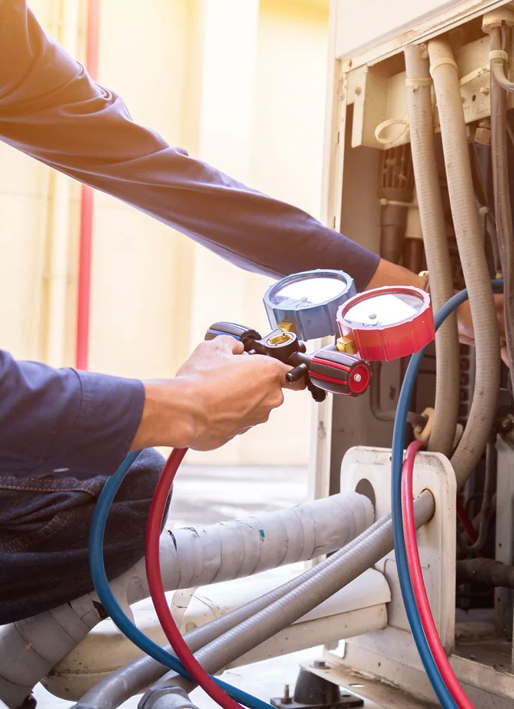

HVAC Maintenance Services
Full overview of one-time and annual options for both heating and cooling.
Learn MoreEven in West Central Florida’s mild winters, a well-maintained heating system makes a real difference in comfort, energy use, and reliability. When cooler nights arrive, the last thing you want is a system that struggles to keep up or fails when you need it most.
At Radco Air Conditioning & Appliance, we provide thorough heating maintenance and furnace tune-ups throughout Spring Hill, Brooksville, Hernando County, Citrus County, Pasco County, and Pinellas County communities including Tarpon Springs and Trinity. Our licensed technicians focus on preventative care that helps your system run efficiently, catch small issues early, and deliver consistent warmth when temperatures drop.

Many homeowners assume heating systems need little attention in our climate. In reality, regular preventative care remains one of the smartest steps you can take. Dust, humidity, and normal wear affect performance over time. A professional heating tune-up restores efficiency, helps protect your investment, and gives you peace of mind before the cooler months.
Airflow problems alone can reduce your system’s efficiency by up to 15%. Regular maintenance helps keep components clean and operating as designed, supporting lower energy use and more consistent comfort.
We serve homes across Spring Hill FL and the surrounding areas with straightforward, no-pressure service. If it has been more than a year since your last professional heating check, now is the ideal time to schedule. Call (352) 684-7821 to arrange your visit.
These benefits apply whether you have a traditional furnace, a heat pump, or a dual-fuel system. Our technicians take the time to explain findings and only recommend work that makes practical sense for your home.
Ready to experience these advantages? Reach out today at (352) 684-7821 for heating maintenance Spring Hill FL and surrounding communities.
A proper heating maintenance visit goes well beyond a quick look. Our technicians follow a detailed process designed to restore performance and identify potential concerns before they become problems.
We examine key components including the heat exchanger, burners or heating elements, blower assembly, electrical connections, safety controls, and thermostat operation.
Filters are checked or replaced as needed, accessible coils and components are cleaned, and moving parts are lubricated where appropriate. We also verify proper airflow and combustion (on gas systems).
We measure system operation, check temperature rise, confirm safe and efficient performance, and test safety features.
You receive a straightforward summary of findings along with any recommendations. We always get your go-ahead before starting additional work and put your heating comfort first.
This level of care helps protect your system and supports the longer equipment life and efficiency gains that come with regular professional attention.
If you prefer a one-time service rather than an ongoing plan, explore our single HVAC maintenance option. For year-round protection that includes both a spring cooling visit and a fall heating visit, see our yearly HVAC maintenance agreements.
We service the full range of heating equipment common in local homes, including gas and electric furnaces, heat pumps, and dual-fuel systems. Whether your equipment is relatively new or has been serving your home for years, the goal remains the same — reliable performance, improved efficiency, and fewer unexpected repairs.
Preventative heating maintenance pairs naturally with other services. If a repair is needed, our team can address it promptly through heating repair. If your system is aging and efficiency has declined significantly, we can also discuss modern options through heating installation. For a more complete overview of everything we offer on the heating side, visit our heating services page.
When you schedule heating maintenance with Radco, you get a team that treats your home with respect and prioritizes long-term performance over quick upsells.
Local Technicians
Who live and work in the communities we serve.
Clear, Honest Guidance
Clear explanations and honest recommendations before any work begins.
Broad Equipment Experience
Experience with furnaces, heat pumps, and dual-fuel systems.
Convenient Scheduling
Responsive local service, including 24/7 support.
Licensed & Insured
HVAC License No. CAC058388.
Practical Solutions
Focused on protecting your comfort and budget.
Heating maintenance is most effective when it fits into a complete care plan. Explore these related options:
Full overview of one-time and annual options for both heating and cooling.
Learn MorePriority service with spring and fall tune-ups.
Learn MoreOne-time professional tune-up when you need it.
Learn MoreDedicated cooling-system care for the warmer months.
Learn MoreFast diagnosis and repair when issues arise.
Learn MoreSupport for cleaner air alongside system maintenance.
Learn MoreWe provide heating maintenance throughout Spring Hill FL, Brooksville, Hernando County, Citrus County, Pasco County, and Pinellas County communities including Tarpon Springs and Trinity. Call us at (352) 684-7821 if you need to confirm service to your specific address.
Most manufacturers and ENERGY STAR recommend a professional check-up for your heating system once a year, ideally in the fall before cooler weather arrives. Regular annual service helps maintain efficiency and catch developing issues early.
A complete visit includes inspection of major components, cleaning where needed, filter check or replacement, performance testing, safety checks, and a clear summary of findings with any recommendations.
Yes. Systems that receive consistent care typically operate more efficiently. ENERGY STAR notes that airflow problems alone can reduce efficiency by up to 15%. Keeping your system clean and properly adjusted supports better performance and more reasonable energy use.
Yes. We perform preventative heating maintenance on gas furnaces, electric furnaces, heat pumps, and dual-fuel systems commonly found in West Central Florida homes.
Absolutely. Many homeowners choose our yearly agreements that include one visit for the air conditioning system in spring and one for the heating system in fall. You can also schedule individual visits as needed.
When you are ready for dependable heating maintenance Spring Hill FL and the surrounding areas, Radco Air Conditioning & Appliance is here to help. Whether you need a thorough furnace tune-up, preventative care for a heat pump, or simply want the peace of mind that comes with professional seasonal service, our local team focuses on clear communication, quality workmanship, and practical recommendations.
Call (352) 684-7821 today or request service online. We are proud to serve Spring Hill, Brooksville, Hernando County, Citrus County, Pasco County, Pinellas County communities, and the greater West Central Florida area with honest, high-quality heating maintenance.